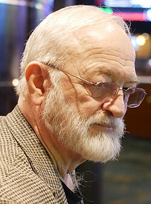

Joe Nickell
Skeptic and investigator, 1944 to 2025

A former magician and private investigator who became a senior research fellow of the Committee for Skeptical Inquiry and wrote more than 30 books on paranormal claims. 1
He explained the Flatwoods monster as a meteor, an aircraft beacon and a barn owl, and called Linda Moulton Howe a credulous journalist for treating photographic flaws as mysterious energy. 2
Open in the interactive Watcher
Related
Sources
- Joe Nickell Wikipedia
- Linda Moulton Howe Wikipedia